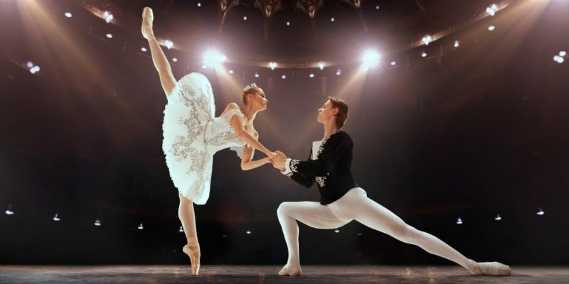

Los bailes sociales, aquellos destinados a la participación más que a una audiencia, pueden incluir varias formas de mímica y narrativa, pero típicamente se establecen mucho más cerca del patrón rítmico de la música, por lo que términos como vals y polka se refieren tanto a piezas musicales como al baile en sí. El ritmo de los pies de los bailarines puede incluso formar parte esencial de la música, como en el claqué. La danza africana, por ejemplo, tiene sus raíces en pasos básicos fijos, pero también puede permitir un alto grado de interpretación rítmica: los pies o el tronco marcan el pulso básico mientras que los hombros, las rodillas o la cabeza recogen ritmos cruzados. los mejores bailarines dando simultáneamente expresión plástica a todos los elementos del patrón polirrítmico.
